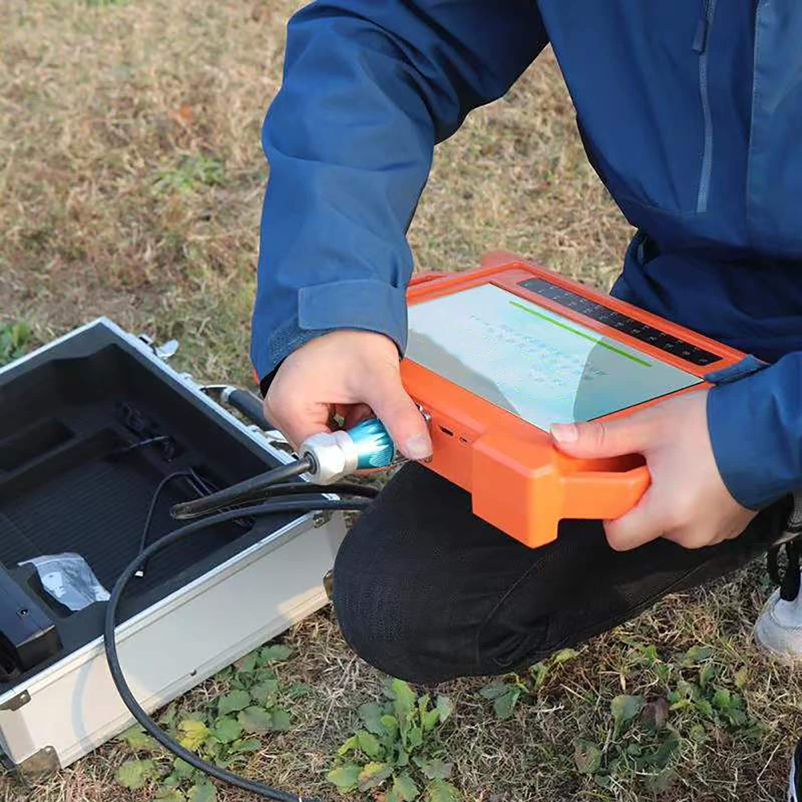

IGS dispose de toutes les ressources et connaissances nécessaires pour trouver de l'eau sur votre propriété et élaborer un plan d'extraction adapté à vos besoins.
INTEGRALE GÉOPHYSIQUE SYSTÈME (IGS) est une entreprise spécialisée dans la recherche et l'exploration des ressources en eau. Nous comprenons l'importance des eaux souterraines pour l'agriculture et l'industrie.
Nous pouvons déterminer la valeur réelle de l'aquifère de votre propriété, ainsi que l'emplacement optimal pour un futur captage d'eau.
Découvrir notre expertise
Prospection géophysique avancée pour localiser les ressources en eau souterraine avec précision.
En savoir plusGestion complète de vos projets de forage, de l'étude de faisabilité à l'exécution.
En savoir plusAnalyse complète des sols agricoles : fertilité, oligo-éléments, métaux lourds.
En savoir plusContactez-nous pour une évaluation de vos besoins
Demander un devis